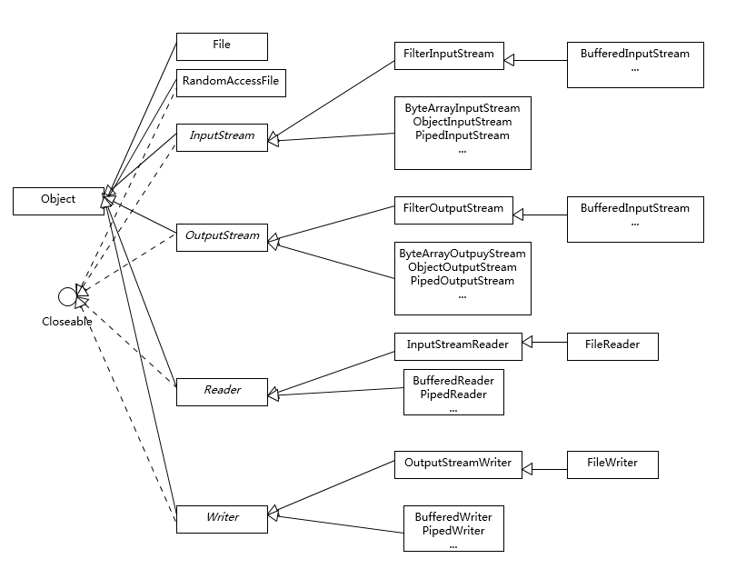
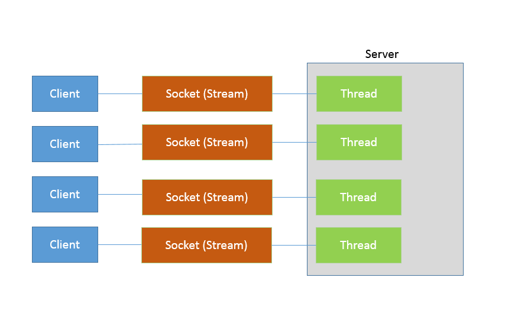
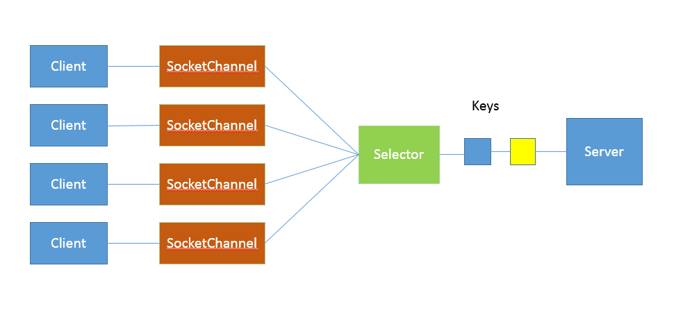

Java I/O
本文摘自极客时间java核心36讲第11讲，作者杨晓峰，写的真的好，分享给大家！
IO 一直是软件开发中的核心部分之一，伴随着海量数据增长和分布式系统的发展，IO 扩展能力愈发重要。幸运的是，Java 平台 IO 机制经过不断完善，虽然在某些方面仍有不足，但已经在实践中证明了其构建高扩展性应用的能力。
今天我要问你的问题是，Java 提供了哪些 IO 方式？ NIO 如何实现多路复用？
典型回答
Java IO 方式有很多种，基于不同的 IO 抽象模型和交互方式，可以进行简单区分。
首先，传统的 java.io 包，它基于流模型实现，提供了我们最熟知的一些 IO 功能，比如 File 抽象、输入输出流等。交互方式是同步、阻塞的方式，也就是说，在读取输入流或者写入输出流时，在读、写动作完成之前，线程会一直阻塞在那里，它们之间的调用是可靠的线性顺序。
java.io 包的好处是代码比较简单、直观，缺点则是 IO 效率和扩展性存在局限性，容易成为应用性能的瓶颈。
很多时候，人们也把 java.net 下面提供的部分网络 API，比如 Socket、ServerSocket、HttpURLConnection 也归类到同步阻塞 IO 类库，因为网络通信同样是 IO 行为。
第二，在 Java 1.4 中引入了 NIO 框架（java.nio 包），提供了 Channel、Selector、Buffer 等新的抽象，可以构建多路复用的、同步非阻塞 IO 程序，同时提供了更接近操作系统底层的高性能数据操作方式。
第三，在 Java 7 中，NIO 有了进一步的改进，也就是 NIO 2，引入了异步非阻塞 IO 方式，也有很
多人叫它 AIO（Asynchronous IO）。异步 IO 操作基于事件和回调机制，可以简单理解为，应用操作直接返回，而不会阻塞在那里，当后台处理完成，操作系统会通知相应线程进行后续工作。
考点分析
我上面列出的回答是基于一种常见分类方式，即所谓的 BIO、NIO、NIO 2（AIO）。
在实际面试中，从传统 IO 到 NIO、NIO 2，其中有很多地方可以扩展开来，考察点涉及方方面面，比如：
基础 API 功能与设计， InputStream/OutputStream 和 Reader/Writer 的关系和区别。
NIO、NIO 2 的基本组成。
给定场景，分别用不同模型实现，分析 BIO、NIO 等模式的设计和实现原理。
NIO 提供的高性能数据操作方式是基于什么原理，如何使用？
或者，从开发者的角度来看，你觉得 NIO 自身实现存在哪些问题？有什么改进的想法吗？
IO 的内容比较多，专栏一讲很难能够说清楚。IO 不仅仅是多路复用，NIO 2 也不仅仅是异步 IO，尤其是数据操作部分。
知识扩展
首先，需要澄清一些基本概念：
区分同步或异步（synchronous/asynchronous）。简单来说，同步是一种可靠的有序运行机制，当我们进行同步操作时，后续的任务是等待当前调用返回，才会进行下一步；而异步则相反，其他任务不需要等待当前调用返回，通常依靠事件、回调等机制来实现任务间次序关系。
区分阻塞与非阻塞（blocking/non-blocking）。在进行阻塞操作时，当前线程会处于阻塞状态，无法从事其他任务，只有当条件就绪才能继续，比如 ServerSocket 新连接建立完毕，或数据读取、写入操作完成；而非阻塞则是不管 IO 操作是否结束，直接返回，相应操作在后台继续处理。
不能一概而论认为同步或阻塞就是低效，具体还要看应用和系统特征。
对于 java.io，我们都非常熟悉，我这里就从总体上进行一下总结，如果需要学习更加具体的操作，你可以通过教程等途径完成。总体上，我认为你至少需要理解：
IO 不仅仅是对文件的操作，网络编程中，比如 Socket 通信，都是典型的 IO 操作目标。
输入流、输出流（InputStream/OutputStream）是用于读取或写入字节的，例如操作图片文件。
而 Reader/Writer 则是用于操作字符，增加了字符编解码等功能，适用于类似从文件中读取或者写入文本信息。本质上计算机操作的都是字节，不管是网络通信还是文件读取，Reader/Writer相当于构建了应用逻辑和原始数据之间的桥梁。
BufferedOutputStream 等带缓冲区的实现，可以避免频繁的磁盘读写，进而提高 IO 处理效率。这种设计利用了缓冲区，将批量数据进行一次操作，但在使用中千万别忘了 flush。
参考下面这张类图，很多 IO 工具类都实现了 Closeable 接口，因为需要进行资源的释放。比如，打开 FileInputStream，它就会获取相应的文件描述符（FileDescriptor），需要利用 trywith-resources、 try-finally 等机制保证 FileInputStream 被明确关闭，进而相应文件描述符也会失效，否则将导致资源无法被释放。利用专栏前面的内容提到的 Cleaner 或 finalize 机制作为资源释放的最后把关，也是必要的。
下面是我整理的一个简化版的类图，阐述了日常开发应用较多的类型和结构关系。

1.Java NIO 概览
首先，熟悉一下 NIO 的主要组成部分：
Buffer，高效的数据容器，除了布尔类型，所有原始数据类型都有相应的 Buffer 实现。
Channel，类似在 Linux 之类操作系统上看到的文件描述符，是 NIO 中被用来支持批量式 IO 操
作的一种抽象。File 或者 Socket，通常被认为是比较高层次的抽象，而 Channel 则是更加操作系统底层的一种
抽象，这也使得 NIO 得以充分利用现代操作系统底层机制，获得特定场景的性能优化，例如，DMA（Direct Memory Access）等。不同层次的抽象是相互关联的，我们可以通过 Socket 获
取 Channel，反之亦然。Selector，是 NIO 实现多路复用的基础，它提供了一种高效的机制，可以检测到注册在Selector 上的多个 Channel 中，是否有 Channel 处于就绪状态，进而实现了单线程对多Channel 的高效管理。
Selector 同样是基于底层操作系统机制，不同模式、不同版本都存在区别，例如，在最新的代码
库里，相关实现如下：Linux 上依赖于epoll（http://hg.openjdk.java.net/jdk/jdk/file/d8327f838b88/src/java.base/linux/classes/
sun/nio/ch/EPollSelectorImpl.java）。Windows 上 NIO2（AIO）模式则是依赖于
iocp（http://hg.openjdk.java.net/jdk/jdk/file/d8327f838b88/src/java.base/windows/class
es/sun/nio/ch/Iocp.java）。Chartset，提供 Unicode 字符串定义，NIO 也提供了相应的编解码器等，例如，通过下面的方式进行字符串到 ByteBuffer 的转换：
Charset.defaultCharset().encode(“Hello world!”));
2.NIO 能解决什么问题？
下面我通过一个典型场景，来分析为什么需要 NIO，为什么需要多路复用。设想，我们需要实现一个服务器应用，只简单要求能够同时服务多个客户端请求即可。
使用 java.io 和 java.net 中的同步、阻塞式 API，可以简单实现。
public class DemoServer extends Thread {
private ServerSocket serverSocket;
public int getPort() {
return serverSocket.getLocalPort();
}
public void run() {
try {
serverSocket = new ServerSocket(0);
while (true) {
Socket socket = serverSocket.accept();
RequestHandler requestHandler = new RequestHandler(socket);
requestHandler.start();
}
} catch (IOException e) {
e.printStackTrace();
} finally {
if (serverSocket != null) {
try {
serverSocket.close();
} catch (IOException e) {
e.printStackTrace();
}
;
}
}
}
public static void main(String[] args) throws IOException {
DemoServer server = new DemoServer();
server.start();
try (Socket client = new Socket(InetAddress.getLocalHost(), server.getPort())) {
BufferedReader bufferedReader = new BufferedReader(new InputStreamR
bufferedReader.lines().forEach(s -> System.out.println(s));
}
}
}
// 简化实现，不做读取，直接发送字符串
class RequestHandler extends Thread {
private Socket socket;
RequestHandler(Socket socket) {
this.socket = socket;
}
@Override
public void run() {
try (PrintWriter out = new PrintWriter(socket.getOutputStream());) {
out.println("Hello world!");
out.flush();
} catch (Exception e) {
e.printStackTrace();
}
}
}
其实现要点是：
服务器端启动 ServerSocket，端口 0 表示自动绑定一个空闲端口。
调用 accept 方法，阻塞等待客户端连接。
利用 Socket 模拟了一个简单的客户端，只进行连接、读取、打印。
当连接建立后，启动一个单独线程负责回复客户端请求。
这样，一个简单的 Socket 服务器就被实现出来了。
思考一下，这个解决方案在扩展性方面，可能存在什么潜在问题呢？
大家知道 Java 语言目前的线程实现是比较重量级的，启动或者销毁一个线程是有明显开销的，每个线程都有单独的线程栈等结构，需要占用非常明显的内存，所以，每一个 Client 启动一个线程似乎都有些浪费。
那么，稍微修正一下这个问题，我们引入线程池机制来避免浪费。
serverSocket = new ServerSocket(0);
executor = Executors.newFixedThreadPool(8);
while (true) {
Socket socket = serverSocket.accept();
RequestHandler requestHandler = new RequestHandler(socket);
executor.execute(requestHandler);
}
这样做似乎好了很多，通过一个固定大小的线程池，来负责管理工作线程，避免频繁创建、销毁线程的开销，这是我们构建并发服务的典型方式。这种工作方式，可以参考下图来理解。

如果连接数并不是非常多，只有最多几百个连接的普通应用，这种模式往往可以工作的很好。但是，如果连接数量急剧上升，这种实现方式就无法很好地工作了，因为线程上下文切换开销会在高并发时变得很明显，这是同步阻塞方式的低扩展性劣势。
NIO 引入的多路复用机制，提供了另外一种思路，请参考我下面提供的新的版本。
public void run(){
//创建Selector 和 Channel
try (Selector selector = Selector.open();
ServerSocketChannel serverSocket = ServerSocketChannel.open();
){
serverSocket.bind(new InetSocketAddress(InetAddress.getLocalHost(),8888));
serverSocket.configureBlocking(false);
//注册到Selector，并说明关注点
serverSocket.register(selector, SelectionKey.OP_ACCEPT);
while (true){
selector.select();//阻塞等待的Channel
Set<SelectionKey> selectionKeys = selector.selectedKeys();
Iterator<SelectionKey> iter = selectionKeys.iterator();
if(iter.hasNext()){
SelectionKey key = iter.next();
//生产系统中一般会额外进行就绪状态检查
sayHelloWorld((ServerSocketChannel) key.channel());
iter.remove();
}
}
} catch (IOException e) {
e.printStackTrace();
}
}
private void sayHelloWorld(ServerSocketChannel server) throws IOException {
try(SocketChannel client = server.accept();){
client.write(Charset.defaultCharset().encode("Hello World"));
}
}
//省略main
}
这个非常精简的样例掀开了 NIO 多路复用的面纱，我们可以分析下主要步骤和元素：
首先，通过 Selector.open() 创建一个 Selector，作为类似调度员的角色。
然后，创建一个 ServerSocketChannel，并且向 Selector 注册，通过指定
SelectionKey.OP_ACCEPT，告诉调度员，它关注的是新的连接请求。注意，为什么我们要明确配置非阻塞模式呢？这是因为阻塞模式下，注册操作是不允许的，会抛
出 IllegalBlockingModeException 异常。Selector 阻塞在 select 操作，当有 Channel 发生接入请求，就会被唤醒。在 sayHelloWorld 方法中，通过 SocketChannel 和 Buffer 进行数据操作，在本例中是发送了一段字符串。
可以看到，在前面两个样例中，IO 都是同步阻塞模式，所以需要多线程以实现多任务处理。而 NIO则是利用了单线程轮询事件的机制，通过高效地定位就绪的 Channel，来决定做什么，仅仅 select阶段是阻塞的，可以有效避免大量客户端连接时，频繁线程切换带来的问题，应用的扩展能力有了非常大的提高。下面这张图对这种实现思路进行了形象地说明。

在 Java 7 引入的 NIO 2 中，又增添了一种额外的异步 IO 模式，利用事件和回调，处理 Accept、
Read 等操作。 AIO 实现看起来是类似这样子：
AsynchronousServerSocketChannel serverSock = AsynchronousServerSocketChannel.open().bind(s
serverSock.accept(serverSock, new CompletionHandler<>() { // 为异步操作指定 CompletionHandler 回调函
@Override
public void completed(AsynchronousSocketChannel sockChannel, AsynchronousServerSocketChannel
serverSock.accept(serverSock, this);
// 另外一个 write（sock，CompletionHandler{}）
sayHelloWorld(sockChannel, Charset.defaultCharset().encode
("Hello World!"));
}
// 省略其他路径处理方法...
});
鉴于其编程要素（如 Future、CompletionHandler 等），我们还没有进行准备工作，为避免理解困难，我会在专栏后面相关概念补充后的再进行介绍，尤其是 Reactor、Proactor 模式等方面将在Netty 主题一起分析，这里我先进行概念性的对比：
基本抽象很相似，AsynchronousServerSocketChannel 对应于上面例子中的ServerSocketChannel；AsynchronousSocketChannel 则对应 SocketChannel。
业务逻辑的关键在于，通过指定 CompletionHandler 回调接口，在 accept/read/write 等关键
节点，通过事件机制调用，这是非常不同的一种编程思路。